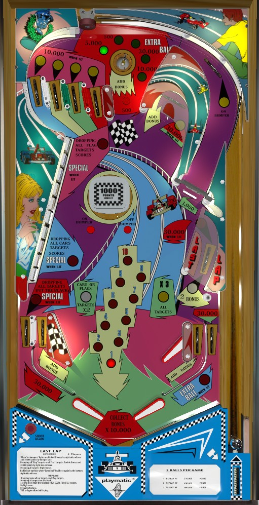

Shoot drop targets. Clearing one or both halves of the 10-bank on the left earns 2x or 3x bonus respectively; bonus is built at the top saucer, in lanes, and the u-turn in the upper right. Bonus advances are worth 10,000 each. Completing the red, green, yellow, or blue drop targets lights the corresponding top lanes to score 10,000 instead of 500.
The below picture of Last Lap's playfield was taken from the VPX recreation by Mfuegemann and Akiles50000.

The top saucer scans between 5 values: 500, 5,000, 10,000, or 30,000 points, or Extra Ball. Landing in the saucer awards 1 bonus advance plus whichever score value is lit. Landing in this saucer when Extra Ball is lit does not award an extra ball directly; rather, it lights an extra ball that must be collected at the right out lane.
There is one 10-bank of drop targets on the right. The lower 5 targets are Cars (one black, two red, two green), and the upper 5 targets are Flags (two yellow, two blue, one black). Either black drop target scores 10,000 points. All other drop targets score 500 points.
Completing either the Cars or Flags awards 2x bonus and lights the middle right side lane to score 30,000 points. Completing both banks awards 3x bonus and resets them. When bonus multiplier is advanced to 3x, completing either half of drop target bank again scores a Special, which can score a free game or an extra ball (maximum 1 extra ball per ball in play).
Knocking down both targets of a non-black colour counts as collecting that colour, which lights one top lane. The four top lanes correspond to blue, yellow, green, and red from left to right. These lanes score 500 points, or 10,000 when lit.
If all 4 are lit at once, the right out lane will be lit for Special. This is deceptively difficult, because if the entire 10-bank is completed, it resets, which undoes all colour progress. Thus, to light this Special, you must complete all of the drop targets corresponding to red, green, yellow, and blue while avoiding at least one of the black drop targets on the ends. This is impressively convoluted, and if Specials are important to you, just go for the bank completion Special instead.
The rollover button to the left of the pop bumper and the rollover switch in the right orbit behind the spinner light the pop bumper. The rollover button to the right of the pop bumper unlights the bumper. The pop bumper scores 100 points, or 1,000 when lit. Pressing either the On Bumper rollover button or right orbit switch will light it. Pressing the other On Bumper switch without turning the bumper off lights the u-turn for 30,000 points instead of its usual 5,000 (plus the bonus advance it always gives), and lights the middle right side lane lit for 2 bonus advances (in addition to its 5,000 points, which becomes 30,000 after completing one bank of targets). There may be an operator setting, which I have not confirmed, that requires the bonus multiplier to be at least 2x or 3x before these lanes can be lit.
The spinner at the front of the right orbit always scores 1,000 points per spin.
Last Lap has a conventional in/out lane setup, but with a second right flipper in place of a slingshot on the right. In lanes score 500 points and a bonus advance. The left out lane scores 30,000 points, plus a Special when lit; the Special is lit by completing all of the red, green, yellow, and blue drop targets while having at least one black drop target still standing. The right out lane scores 30,000 points, plus an Extra Ball when lit; it is lit by landing in the upper right saucer when the scanning award has selected Extra Ball.
Bonus is advanced by either in lane, the upper right u-turn lane, and the top saucer. The middle right side lane can also be lit for 2 bonus advances if the pop bumper is lit (and potentially also requiring the bonus multiplier to be 2x or 3x). Each bonus advance is worth 10,000 points instead of the traditional 1,000. Completing one or both banks of drop targets in one ball awards 2x or 3x bonus, respectively. Max bonus is 3x 100,000 = 300,000 points. The first bonus advance is not given for free, so it is possible to drain with 0 bonus. There is no mid-ball bonus collect and no way to carry any part of the bonus or multiplier from ball to ball. Bonus multipliers are never given for free.
Extra ball and Special cannot have a point value, as far as I have encountered.
Because nothing in this game awards fewer than 100 points, the end of game match feature considers the last 3 digits of your score instead of the usual 2. If Specials are set to award extra balls instead of free games, the match feature is disabled entirely.